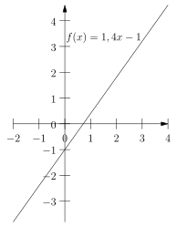
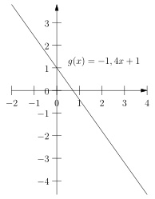
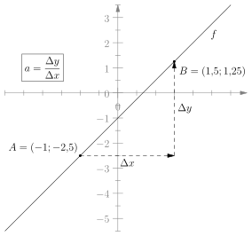
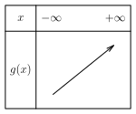
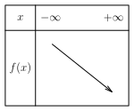
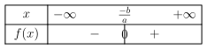
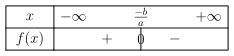

Méta signe fonction
1. Cours
1.1. Fiche sur les fonctions affines
1.1.1. Définition
Une fonction affine est une fonction \(f\) définie sur \(\mathbb{R}\) par : \[ f(x) = ax + b \] avec \(a\) et \(b\) des constantes réelles, \(a\not = 0\) qui porte le nom :
- \(a\) est le coefficient directeur, car selon son signe \(f\) est croissante ou décroissante sur \(\mathbb{R}\).
- \(b\) est l'ordonnée à l'origine, car \(f(0) = b\)
1.1.2. Représentation graphique
- Les fonctions affines sont des droites
La courbe représentative d'une fonction affine est une droite.

Ci-contre, voici deux exemples de fonction affine.
\(f\) est croissante sur \(\mathbb{R}\), alors que \(g\) est décroissante.

- Lire le coefficient directeur d'une droite

Ici, on peut lire deux points \(A\) et \(B\) qui appartiennent à la droite, avec : \[ A=(-1;-2,5) \quad \text{et} \quad B=(1,5;1,25) \] On peut calculer \(\Delta x\) et \(\Delta y\) par :
\begin{align*} \Delta x &= 1,5 - (-1) &\quad \Delta y &=1,25 - (-2,5) \\ \Delta x &= 2,5 &\quad \Delta y &=3,75 \end{align*}On en déduit que le coefficient directeur \(a\) de la fonction affine \(f\) vaut : \[ a = \frac{\Delta y}{\Delta x} = \frac{3,75}{2,5} = 1,5 \] Donc \(\boxed{a = 1,5}\)
1.1.3. Antécédent de \(0\)
Pour trouver les antécédents de \(0\), il suffit de résoudre l'équation \(f(x) = 0\).
Si \(f(x) = ax+b\), alors l'antécédent de \(0\) est \(\boxed{x = \frac{-b}{a}}\).
Si \(f(x) = -3x + 5\) alors résoudre \(f(x) = 0\) revient à la résolution suivante:
\begin{align*} -3x + 5 &= 0 \\ -3x &= -5 \\ x &= \frac{-5}{-3} \\ x&=\frac{5}{3} \end{align*}Donc l'antécédent de \(0\) par la fonction \(f\) est \(\boxed{x = \frac{5}{3}}\). Autrement dit \(f\left(\frac{5}{3} \right) = 0\)
1.1.4. Tableau de variation
Pour \(f(x) = ax+b\) une fonction affine :
- Si \(a>0\), alors \(f\) est croissante sur \(\mathbb{R}\),
- Si \(a < 0\) alors \(f\) est décroissante sur \(\mathbb{R}\).
Voici deux exemples de rédaction :
- Si \(g(x) = 3x - 2\) alors \(a= 3 > 0\) donc \(g\) est croissante sur \(\mathbb{R}\).
- Si \(f(x) = 8 - 4x\) alors \(a = -4 < 0\) donc \(f\) est décroissante sur \(\mathbb{R}\).


1.1.5. Tableau de signe
On utilise les résultats de la partie 1.1.3 pour trouver l'antécédent par une fonction affine de \(0\) et pouvoir compléter le tableau de signe.
Si \(f\) est une fonction affine croissante sur \(\mathbb{R}\), alors son tableau de signe est donné par le tableau 1
Si \(f\) est une fonction affine décroissante sur \(\mathbb{R}\), alors son tableau de signe est donné par le tableau 2

Figure 1 : Tableau de signe d'une fonction affine croissante (\(a>0\))

Figure 2 : Tableau de signe d'une fonction affine décroissante (\(a<0\))
1.1.6. Tableau de signe d'un produit de fonctions affines
Si \(f(x) = f_{1}(x) \times f_2(x)\) avec \(f_1\) et \(f_2\) deux fonctions affines, alors :
- \(f(x)\) est positif si et seulement si \(f_{1}(x)\) et \(f_{2}(x)\) sont de même signe.
- \(f(x)\) est égal à \(0\) si et seulement si \(f_{1}(x)\) ou \(f_2(x)\) est égal à \(0\)
- Dans tous les autres cas, \(f(x)\) est négatif.
Soit la fonction \(f(x) = (4x - 5)(-2x + 2)\). Donner le tableau de signe de \(f\) sur \(\mathbb{R}\).
\vspace{4cm}
1.1.7. Tableau de signe d'un quotient de fonctions affines
Si \(f(x) = \frac{f_{1}(x)}{f_2(x)}\) avec \(f_1\) et \(f_2\) deux fonctions affines, alors \(f\) est définie sur \(\mathbb{R}\) sauf pour l'antécédent de \(0\) de \(f_{2}\) (car on ne peut pas diviser par \(0\)).
Pour tout \(x \in \mathbb{R}\) excepté l'antécédent de \(0\) par \(f_{2}\), on a :
- \(f(x)\) est positif si et seulement si \(f_{1}(x)\) et \(f_{2}(x)\) sont de même signe.
- \(f(x)\) est égal à \(0\) si et seulement si \(f_{1}(x)\) est égal à \(0\)
- Dans tous les autres cas, \(f(x)\) est négatif.
Soit la fonction \(f(x) = \frac{4x - 3}{2x + 1}\) Donner le tableau de signe de \(f\) sur \(\mathbb{R}\setminus\lbrace \frac{-1}{2} \rbrace\).
\vspace{4cm}